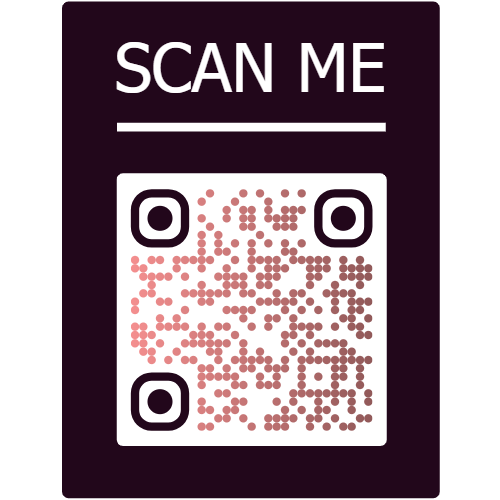

Imagen 1
Tríptico QR

Video QR
PDF QR
Hosting
El hosting o alojamiento web es un servicio que permite a individuos y organizaciones almacenar contenido en servidores accesibles a través de Internet. Aquí algunas características, ejemplos, ventajas y desventajas:
- Espacio en Disco: Cantidad de almacenamiento disponible para el sitio web.
- Ancho de Banda: Capacidad de transferencia de datos entre el sitio y sus usuarios.
- Uptime: Tiempo durante el cual el servidor está en funcionamiento y accesible.
- Soporte Técnico: Asistencia proporcionada por el proveedor para resolver problemas técnicos.
- Seguridad: Medidas implementadas para proteger el sitio contra amenazas.
- Escalabilidad: Capacidad de adaptarse al crecimiento del sitio sin afectar su rendimiento.
Algunos ejemplos de proveedores de hosting incluyen Bluehost, HostGator y SiteGround.
Ventajas: Flexibilidad, fácil acceso a recursos técnicos, opción de escalabilidad. Desventajas: Costos variables según el tipo de hosting.
WordPress
WordPress es un sistema de gestión de contenido (CMS) que facilita la creación y administración de sitios web. Algunas características, ejemplos, ventajas y desventajas incluyen:
- Fácil de Usar: Interfaz intuitiva que permite a usuarios sin conocimientos técnicos gestionar contenido.
- Flexibilidad: Amplia gama de temas y plugins para personalizar la apariencia y funcionalidad.
- SEO Amigable: Herramientas integradas para optimizar el sitio para motores de búsqueda.
- Comunidad Activa: Gran comunidad de usuarios y desarrolladores que contribuyen con soporte y recursos.
- Actualizaciones Regulares: Mejoras continuas en seguridad y funcionalidad a través de actualizaciones.
WordPress es utilizado por millones de sitios web en todo el mundo, desde blogs personales hasta grandes empresas como CNN y Sony.
Ventajas: Amplia comunidad de soporte, extensibilidad con plugins, actualizaciones frecuentes. Desventajas: Posible vulnerabilidad a ataques si no se mantienen actualizaciones de seguridad.
Códigos QR
Los códigos QR son códigos de barras bidimensionales que almacenan información que puede ser escaneada con dispositivos móviles. Algunas características, ejemplos, ventajas y desventajas incluyen:
- Capacidad de Almacenamiento: Pueden contener diversos tipos de datos como URL, texto, números de teléfono, etc.
- Accesibilidad: Acceso rápido a la información escaneando el código con smartphones.
- Marketing: Utilizados en campañas para proporcionar enlaces rápidos a promociones y sitios web.
- Seguimiento: Permite rastrear la efectividad de campañas de marketing y la interacción del usuario.
- Personalización: Herramientas disponibles para personalizar el diseño y la apariencia de los códigos QR.
Los códigos QR se utilizan en sectores como el marketing, transporte, educación y más.
Ventajas: Versatilidad de uso, fácil integración con dispositivos móviles, posibilidad de medir resultados. Desventajas: Dependencia del escáner QR del usuario, limitación en la cantidad de datos que pueden contener.